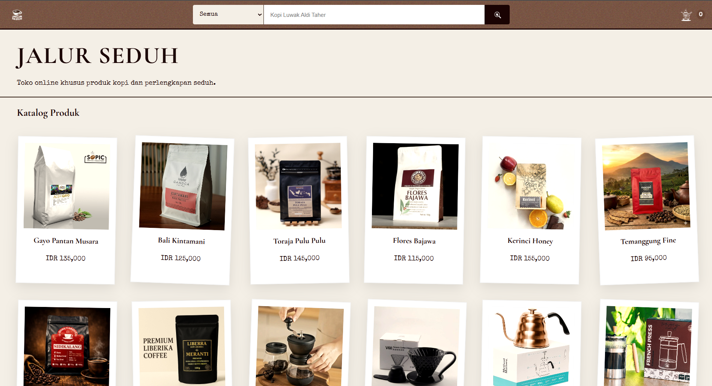
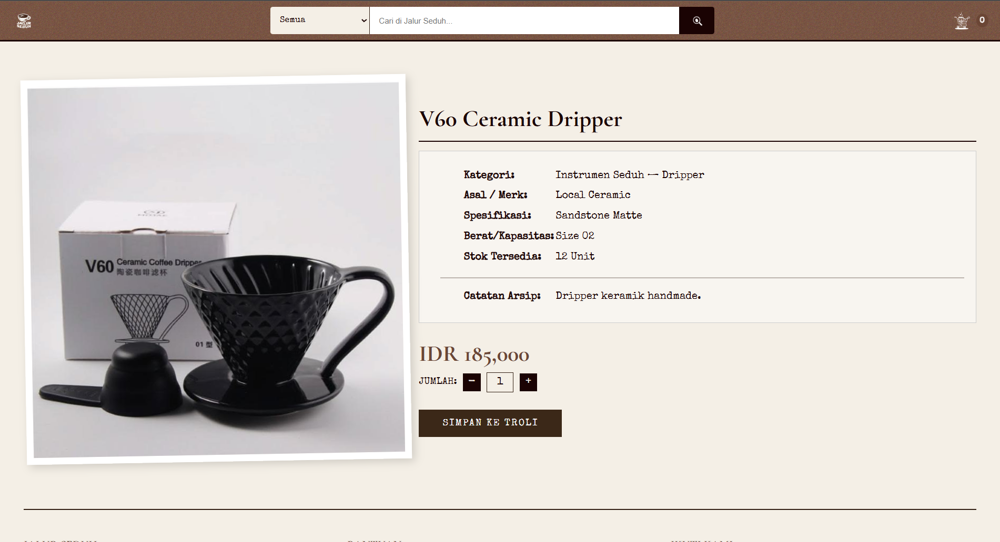
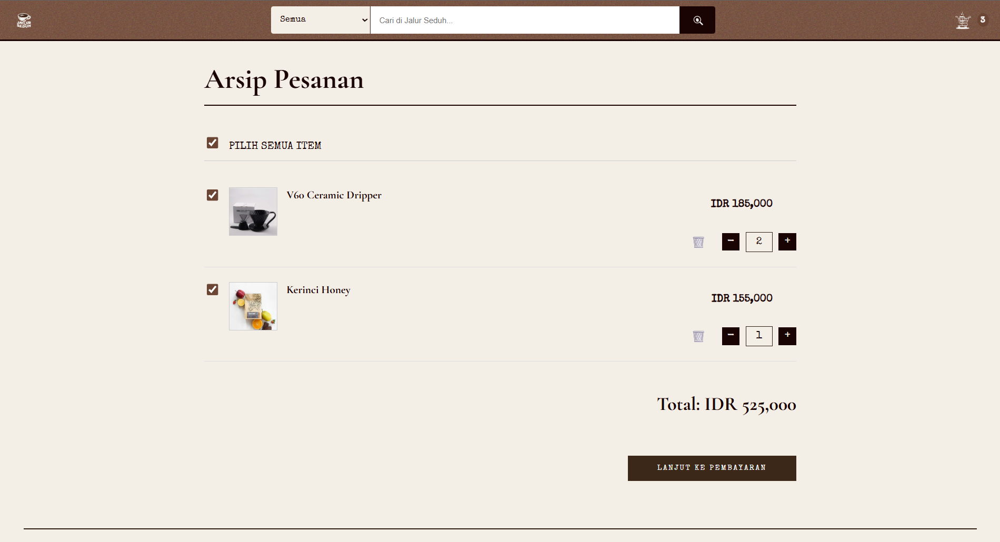

Jalur Seduh
E-Commerce Coffee Product Catalogue
SH
Sultan Hamdi Jailani Daulay
5054241013
RD
Rafli Djanuar Anangsyah
5054241025
Halaman Beranda
Detail Produk
Keranjang BelanjaDeskripsi Aplikasi
Jalur Seduh adalah aplikasi web berbasis E-Commerce yang dirancang sebagai katalog produk kopi. Aplikasi ini memungkinkan pengguna untuk menjelajahi berbagai varian kopi, melihat detail produk, dan melakukan pemesanan secara online.
Fitur Utama
- Katalog produk kopi lengkap dengan filter dan pencarian
- Keranjang belanja interaktif
- Desain responsif untuk semua perangkat
- UI/UX modern dengan animasi halus